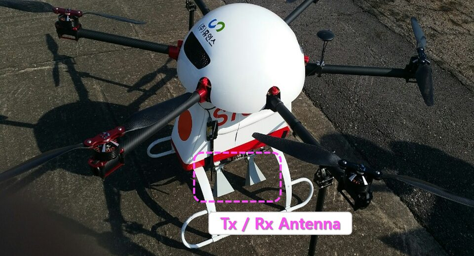

연구실적 · 국내전문학술지
드론을 활용한 초소형 SAR 영상 구현 및 품질 보상 분석
Drone-Based Micro-SAR Imaging System and Performance Analysis through Error Corrections
 DOI
DOI PDF
PDF
초록
최근 무인기 탑재를 위한 소형 SAR 시스템 관련연구가 활발하게 진행되고 있으나, 드론과 같은 소형 비행 플랫폼에 대한 적용 사례는 매우 드물다. 드론의 경우, 고정익 무인항공기에 비해 기상, 조종환경 등에 취약하므로 고품질의 SAR 영상을 획득하기 위해서는 매우 정밀한 요동 분석 및 오차 보상 알고리즘이 요구된다. 특히 소형 드론에서는 SAR 탑재체 무게 및 전력의 제약으로 자세 제어 및 센서 장착이 어려워 영상 품질 보장이 어려워진다. 본 연구에서는 드론에 SAR를 탑재하여 영상을 획득하는 가능성을 제시한다. 이를 위해 실제 레이다가 탑재된 드론을 사용하여 SAR 영상을 획득하고, 그 품질을 분석하였다. 드론 SAR 기하 구조 분석을 통해 드론의 요동에 의해 발생될 수 있는 위상오차를 분석하고, 불규칙한 드론 이동에 의한 왜곡을 보상함으로써 드론 SAR의 운용 가능성을 검증하였다.
사이트 원문 표기
이기웅, 김범승, 문민정, 송정환, 이우경, 송용규, “드론을 활용한 초소형 SAR 영상 구현 및 품질 보상 분석”, 한국전자파학회지, 제27권 9호, 2016년 9월
BibTeX
@article{Lee_2016,
title={Drone-Based Micro-SAR Imaging System and Performance Analysis through Error Corrections},
volume={27},
ISSN={1226-3133},
url={http://dx.doi.org/10.5515/KJKIEES.2016.27.9.854},
DOI={10.5515/kjkiees.2016.27.9.854},
number={9},
journal={The Journal of Korean Institute of Electromagnetic Engineering and Science},
publisher={Korean Institute of Electromagnetic Engineering and Science},
author={Lee, Kee-Woong and Kim, Bum-Seung and Moon, Min-Jung and Song, Jung-Hwan and Lee, Woo-Kyung and Song, Yong-Kyu},
year={2016},
month=Sept,
pages={854–864}
}